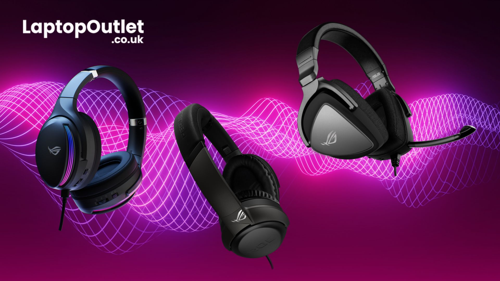
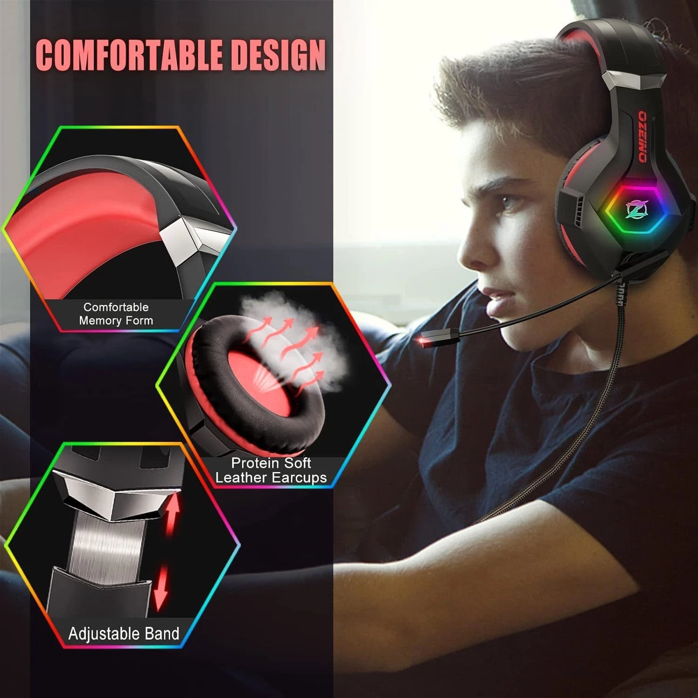
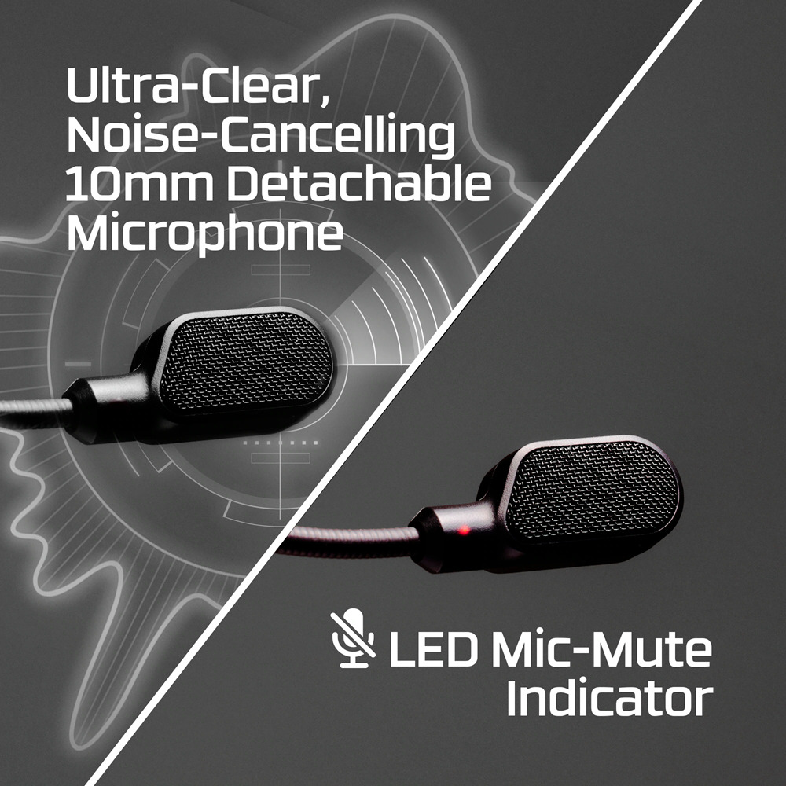
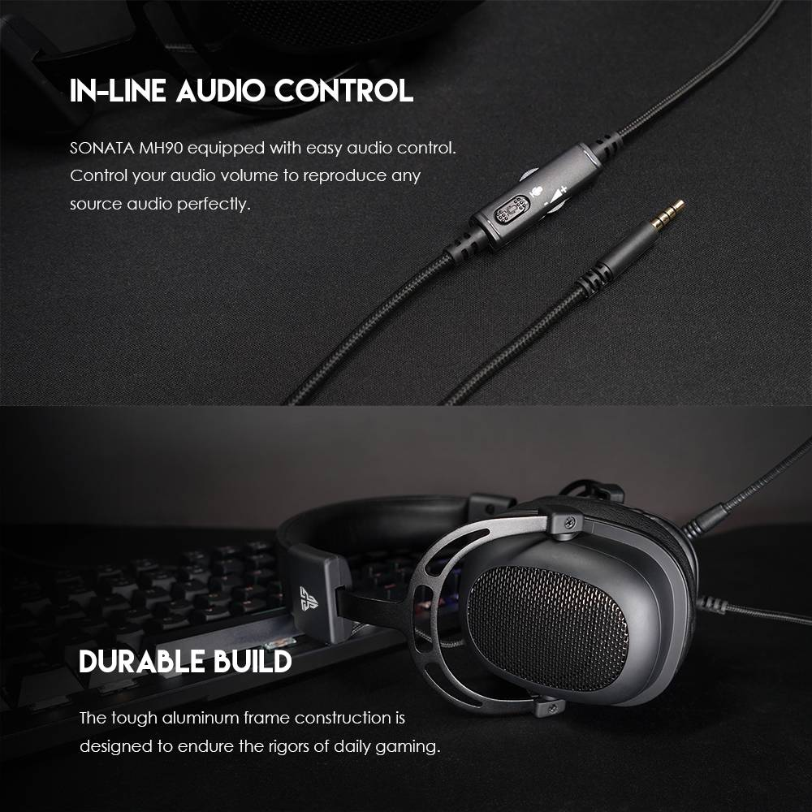
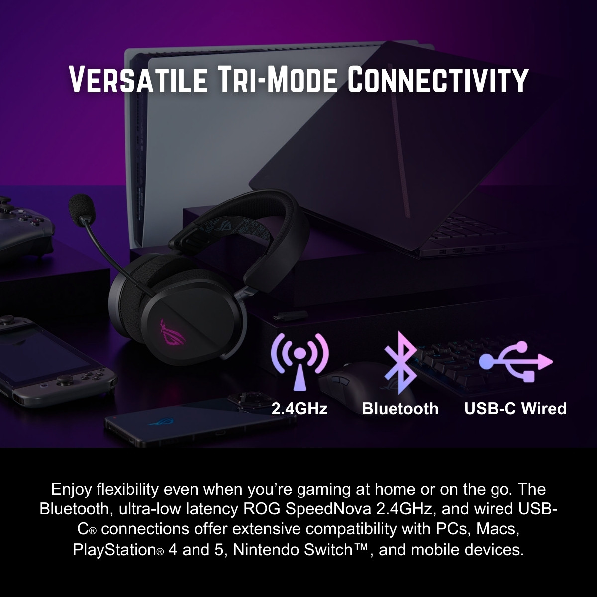
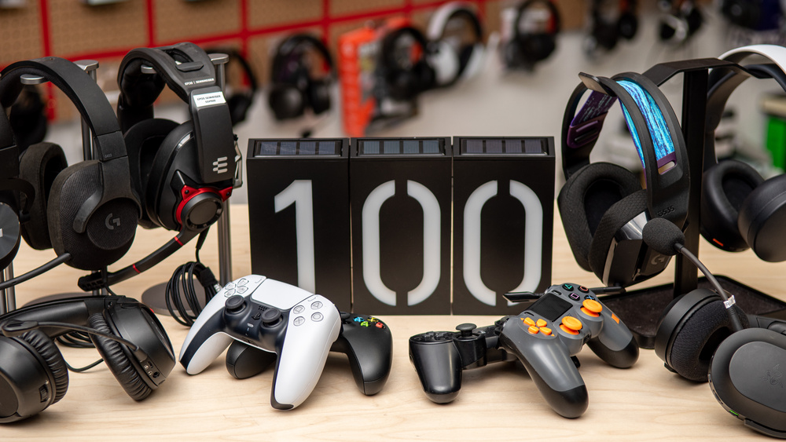

The Ultimate Guide to Gaming Headsets
| Feature | Why It Matters | Pro Tip |
|---|---|---|
| Sound Quality | Pinpoint enemy movements, enjoy immersive worlds, and react faster. | Look for 7.1 surround sound or spatial audio support. |
| Comfort | Prevents fatigue and discomfort during long sessions. | Memory foam earcups and adjustable bands are best. |
| Microphone | Ensures clear team communication and callouts. | Choose a detachable or flip-to-mute mic for flexibility. |
| Durability | Withstands daily use, travel, and accidental drops. | Metal frames and braided cables last longer. |
| Connectivity | Works across PC, console, and mobile devices. | Wireless headsets with low latency are ideal for freedom. |
1. Exceptional Sound Quality
A pro gaming headset should deliver crisp, immersive audio. Look for features like surround sound, deep bass, and clear highs. Superior sound helps you pinpoint enemy movements and environmental cues, giving you a competitive edge.
- Enhanced immersion
- Better spatial awareness
- Improved reaction time
- High-end audio can increase price
- Some features require software setup
2. Comfortable Design
Comfort is crucial for long gaming sessions. Choose headsets with soft ear cushions, adjustable headbands, and lightweight materials to prevent discomfort and fatigue.
- Wearable for hours
- Reduces ear and head pressure
- Bulky designs may not suit everyone
3. High-Quality Microphone
Clear communication is vital in multiplayer games. Opt for a headset with a noise-cancelling microphone to ensure your teammates hear you without background distractions.
- Crystal-clear voice chat
- Reduces background noise
- Some mics pick up breathing or keyboard sounds
4. Durable Construction
Gaming gear should withstand daily use. Look for headsets made from sturdy materials and reinforced cables for long-lasting performance.
- Longer lifespan
- Better value over time
- Heavier materials can add weight
5. Versatile Connectivity
Make sure your headset is compatible with your devices. Whether you prefer wired or wireless, look for options that work with PC, console, and mobile for maximum flexibility.
- Use with multiple platforms
- Wireless options for freedom of movement
- Wireless headsets need charging
- Compatibility varies by model
Frequently Asked Questions
Are wireless gaming headsets better than wired?
Wireless headsets offer more freedom of movement, but wired models often have lower latency and never need charging. Choose based on your gaming setup and preferences.
What is surround sound in gaming headsets?
Surround sound simulates directional audio, helping you locate in-game sounds more accurately. This is especially useful in competitive shooters.
How important is a detachable microphone?
Detachable or flip-to-mute microphones add flexibility, letting you use your headset for music or travel without the mic in the way.
Conclusion & Tips
The right gaming headset combines sound quality, comfort, microphone clarity, durability, and connectivity. Investing in a headset with these features will elevate your gameplay and communication. For more gaming tips and gear recommendations, explore Gamevora's blog.
- Test headsets in-store if possible for comfort and fit.
- Check for software support for custom EQ and sound profiles.
- Read user reviews for real-world durability insights.
Inspired by JBL's guide to pro gaming headsets.